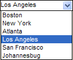

Setting Choices for List and Combo Boxes
A data field displayed as a list box accepts only values that are in its choice list. A data field displayed as a combo box accepts both values in the list and new values entered by the user. These images show a list box in regular and combo box formats.


Select the control, choose Object > Properties and display the Setup tab.
Select "List Box" or "Combo Box" in the Field-Type list.
Display the Choices tab.
Select one of the Choices for control. The options are:
- " User Defined "
- " Computed Automatically "
- " Populated using Xbasic "
If you selected "User Defined" in step 4:
Select the display style. The options are:
"Bitmap followed by text"
"Bitmap only"
"Bitmap over text"
"Text followed by bitmap"
"Text only"
"Text over bitmap"
Enter choices one per line. Refer to Specifying User Defined Choices.
Optionally, click or
 to sort the entries in ascending or descending order.
to sort the entries in ascending or descending order.If the selection in step 5a included bitmaps, click Define bitmaps... to display the Define Bitmaps dialog box. Otherwise, click OK to save your choices definition.
In the Define Bitmaps dialog box select each entry in turn and click Define Bitmap to display the Define Picture dialog box.
In the Define Picture dialog box optionally check Button displays a different picture when a button is pressed. This causes the Pressed tab to appear.
Optionally, on the Default tab click Embedded and Select Embedded Bitmap. Navigate to the image, select it, and click Open.
Optionally, on the Default tab click File and
 . Navigate to the image, select it, and click Open.
. Navigate to the image, select it, and click Open.Optionally, on the Default tab click Internal and
. Select the image from the Insert Image dialog box, and click Insert.If the Pressed tab is visible, display it, and select another image in the same manner as Described by steps 5h through 5j.
Click OK, OK and OK to save your choices definition.
Choices Automatically Computed
If you selected "Computed Automatically" in step 4:
Select data Source. The options are:
" Field List "
"Browse Layouts"
"Form Layouts"
"Report Layouts"
"Label Layouts"
"Letter Layouts"
"Append Operations"
"Copy Operations"
"Export Operations"
"Import Operations"
"Join Operations"
"Mark Operations"
"Post Operations"
"Query Operations"
"Summary Operations"
"Update Operations"
"Xtab Operations"
"Tables"
"Sets"
"Menu Objects"
"Toolbar Objects"
"Scripts"
"Functions"
"Bitmaps"
If you selected "Values from a Table/Set" in step 6a:
Select a table or set in the From Table list.
Do one of the following:
- Select a field to display in the Field/expression field.
- Select "
" in the Field/expression field to display the <span class=Screen>Expression Builder</span>. Enter an expression that defines values to display and click OK.
 Note : This expression may return more than one field as long as they are separated by "|" characters (e.g. Product_Name + "|" + Product_No ). Only the first field will display in the list box.
Note : This expression may return more than one field as long as they are separated by "|" characters (e.g. Product_Name + "|" + Product_No ). Only the first field will display in the list box.
Optionally, click
 to display the Order Builder to order the list choices that will appear.
to display the Order Builder to order the list choices that will appear.A filter expression selects values from a lookup table based on one or more values in the current table. Optionally check Enable Filter Expression and click Edit Filter Expression to display the <span class=Screen>Filter Expression</span> dialog box.
Optionally, check Display only unique keys to avoid duplicate entries in the list.
Optionally, click Preview to see the data that the list will contain.
Click OK to save your choices.
If you selected "Field List" in step 6a, select the table or set in the Display fields for which table? list.
If you selected "Expression (that returns a CR-LF delimited list)" in step 6a:
In the Expression field enter an expression or function that returns a list of CR-LF delimited values. Optionally, click
 to display the <span class=Screen>Expression Builder</span> dialog box.
to display the <span class=Screen>Expression Builder</span> dialog box.Optionally, enter an expression in the Watch Expression field. When this value changes, Alpha Anywhere will refresh the choice list.
Optionally, click Preview to see the data that the list will contain.
Click OK to save your choices.
Lists of Layouts and Operations
If you selected a list of layouts or operations in step 6a:
Make a selection from the For field. The options are:
"Current Table/Set"
"Selected Tables/Sets"
"All Tables/Sets"
If you selected "Selected Tables/Sets", click Select... .
Place checkmarks to the left of each table or set that you wish to include and click OK.
Optionally, click Preview to see the data that the list will contain.
Click OK to save your choices.
If you selected "Computed Automatically" in step 4:
Click OK to save your property settings.
Right click on the form and select Events > OnInit.
In the Create new Event Script dialog select Create using Xbasic and click OK.
Enter Xbasic code structured as follows. Substitute your control's name for
. Optionally, substitute your list of choices, one per line, for:
...
DIM pObj as P pObj = topparent: pObj.settings.dynamic_list = <<%str% ... %str% |
Optionally, substitute a call to a function that returns a CR-LF delimited list for:
<<%str%
...
%str%
DIM pObj as P pObj = topparent: pObj.settings.dynamic_list = MyFunction() |
See Also
Specifying Choices, Field Properties